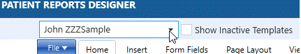

Editing Reports
- The Report Designer functions much like Microsoft® Word and other word processor programs.

- The font and other formatting tools are available in the Home tab. (shown above)
- Change the margins, page size, column layout, etc in the Page Layout tab.

- Insert tables, images, text boxes, headers, footers, and signature fields from the Insert tab.
 Hint - when designing reports, it is highly recommended to use the table function. This allows for better alignment and positioning of fields and graphics.
Hint - when designing reports, it is highly recommended to use the table function. This allows for better alignment and positioning of fields and graphics.

- New in version 6.08: multiple signature fields can now be entered on one document for the the patient or provider to sign. For example, an agreement form can be designed that requires several spots for initials and a full signature. To collect signatures, you must have a supported Topaz® signature pad. (contact TIMS Support for details) . Position your cursor where you'd like insert the signature, then click the Insert tab, then Signature Field. You can resize the field to whatever size needed. (larger for a signature, smaller for initials, for example). Other formatting (text wrapping, size, alignment) can be done by right-clicking on the merge fields.


- Also new in version 6.08: Check boxes and date pickers can be added to a document that can be dynamically clicked while the letter is on the screen. The checked box and/or date selected will then printed and/or saved with the archived report.


- Change how you view the report in the View tab. For example, change the zoom, hide/view table gridlines and rulers, etc.

- To add the merge fields from TIMS, click on either the Diagnostic Fields or SLP Fields tab.

You will see the merge field categories and drop downs.

Position your cursor where you would like to insert the merge field, then select a Category and a Field to insert.

Then click the plus sign to insert the field into the report.

- The list of the available merge fields are:
- Preview the layout of the diagnostic report as follows:
- Create a "dummy" patient with a last name beginning with three "Z"s. Example: John ZZZSample
- Create a history record for that patient, along with an audiogram and all the diagnostic and/or speech data you wish to display on your diagnostic report.
- In the Patient Report Designer, select the name from the preview drop down, if not already selected.

- Select the report you wish to preview from the Report Designer panel. Click the Merge button from the Home tab.

- Your report layout with the dummy patient's data will be previewed on the right. (see example)

You cannot edit or print the report from here, only view it. To edit the report and make changes, click Designer to return to design mode.

- When you have finishing creating your letter, click the File tab, and then Save.

Inactivating and Deleting Reports
- Select the report you wish to edit in the Report Designer Panel.
- Click the Edit Patient Report icon
 .
. - The report information screen will popup, showing summary information.

- Click the Inactive checkbox.
- Click the green Save Button.
- If Show Inactive Templates box is not checked, the report will disappear from the panel.

- Delete a report template:
- A report must first be inactive before it can be deleted.
- If the inactive report is not visible on the list, check the Show Inactive Templates checkbox.
- Select the report, then click the Delete icon.

- A confirmation will popup to confirm the deletion. Click Yes to delete, No to cancel.
Designer Tips and Tricks
General
- Merge fields need to be deleted one at a time. You can’t select multiple fields to delete at once.
- When setting margins, the number input needs to have a leading zero. For example "0.5" not ".5".
- To increase the size of a check box field, highlight the box and change it to a larger font size.
- If words seem to be splitting excessively on lines (over-hyphenating), you can change the settings (per user). Right-click on a misspelled word, click Options, then Hyphenation to increase the number of characters. Other spell-checker options can be set in Spell Checking Options.

Images
- Inserted image bookmarks (signatures, logos, audiograms, etc.) should be formatted as “Embed data in document”. This is the default setting, but it can be double-checked here: Right-click – Format, then Saving Options, Saving Style.

- Text wrapping for images: when images are used in tables, it works best to use Top and Bottom or In Line wrapping.

- Image merge fields sometimes format better if a space is added after when inserted in a table.
- Vertical text boxes are not supported in the designer.
Tables
- If grid lines are not displaying properly, it may help to remove then re-add them.
- For multi-line merge fields such as notes, diagnosis, etc. - uncheck "Allow row to break across pages" to keep the field together. You need to click the box once to select, then again to uncheck. Right-click - Format Table - Size and Formatting - Options.

- If a table is used in a header, and the cell is right-justified, it works best to increase the cell margins to 0.2